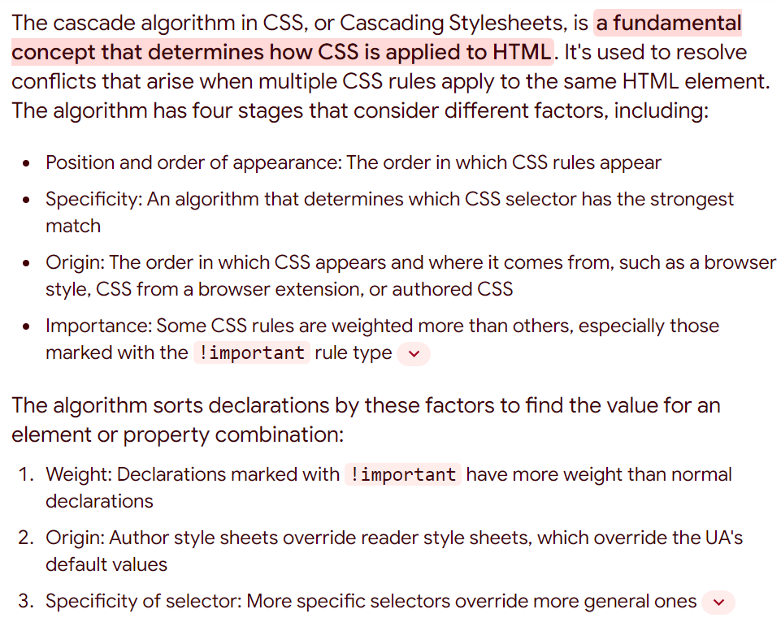
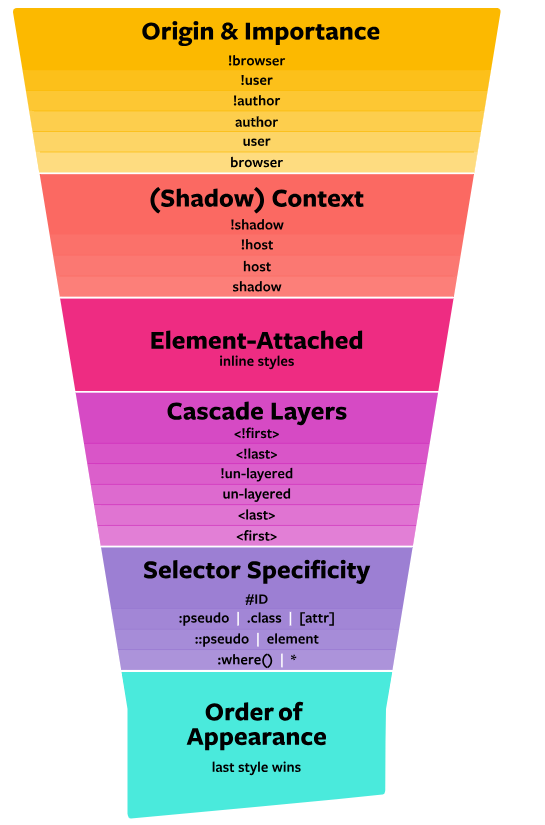
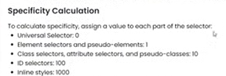

CSS SPECIFICITY
CASCADE ALGOTITHM



Summary of Lecture 21
- Cascade: Many selector are used to style a single element and css solve this conflict by Cascade.
- Cascade Algorithm : It determine which property of CSS will be applied in Element. The cascade algorithm has 4 distinct stages.
- Position and order of appearance : If same selector, then last one will be used
- Origin: authored CSS has priority
- Important: When !important It has highest priority.
- Specificity: Selector with high specificity is applied to html element.
- Order of Specificity: Inline Style > ID selector > Class or Attribute selector > Element Selector > Universal Selector
- Calculating Specificity: Value of Each Selector: Universal is 0, 1 for each element selector or pseudo-element, 10 for each class value (or pseudo-class or attribute selector), 100 for each ID value. Inline Style has 1000 specificity. Just add value to find specificity